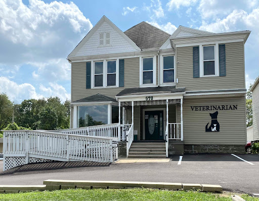
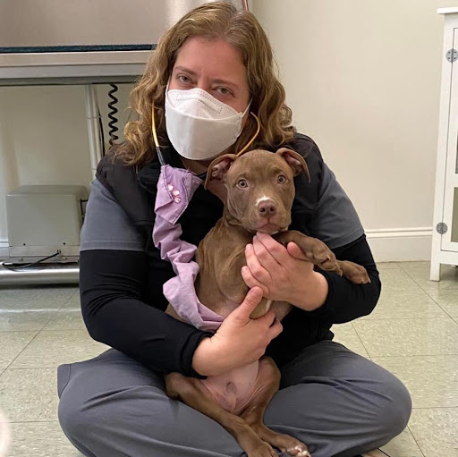
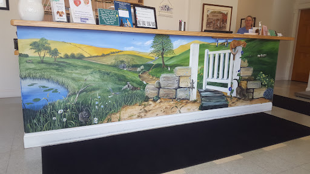

Small-animal care in Akron, from wellness exams to boarding
Highland Veterinary Clinic is an AAHA-accredited small-animal veterinary clinic in Akron.

Photo from Highland Veterinary Clinic's Google listing: the clinic building at 578 W Market St, Akron, with the veterinarian sign and entrance ramp.
About the clinic
Highland Veterinary Clinic provides wellness care, dentistry, surgery, diagnostics, boarding, and grooming, with nutritional and behavioral counseling. For emergencies after hours, 24-hour emergency care is available through Metropolitan Veterinary Hospital in Copley, with Highland doctors on call for established patients.
Services
Wellness exams
Vaccinations
Dentistry
Surgery
Diagnostics
Boarding
Grooming
Nutritional counseling
Behavioral counseling
24-hour emergency care
Through Metropolitan Veterinary Hospital in Copley, at 330-666-2976, with Highland doctors on call for established patients.
Gallery


Photos on this page are real photos of Highland Veterinary Clinic from its Google listing.
Questions
Where is the clinic?
578 W Market St, Akron, OH 44303. Get directions on Google Maps
When is the clinic open?
Monday through Wednesday 8:30 AM to 5:30 PM, Friday 8:30 AM to 5:00 PM, and Saturday 8:30 AM to 12:00 PM. Closed Thursday and Sunday.
What do I do in an emergency after hours?
24-hour emergency care is available through Metropolitan Veterinary Hospital in Copley, at 330-666-2976, with Highland doctors on call for established patients.
How do I reach the clinic?
Call +1 330-253-6868. No public email address was found for the clinic.
What services does the clinic offer?
Wellness exams, vaccinations, dentistry, surgery, diagnostics, boarding, grooming, and nutritional and behavioral counseling.
Questions? Call +1 330-253-6868.